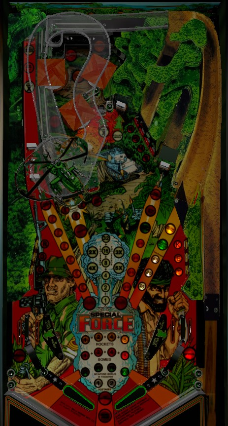

Special Force Girls is a rebrand of Special Force for Europe with identical rules and layout.
The Weapons ramp on the near right with a single drop target in front raises the Weapons value; the far right Road ramp scores the Weapons value as well as its own increasing value, which is immensely valuable at up to 320,000 points. The center drop target opens the center lane to lock balls; after one or more balls are locked, shoot the left lane to light lock release at the Road ramp, or bash the center lane drop target some more for an automatic release. In multiball, all switches add 10,000 points to the Escape jackpot; to collect, shoot any ramp then shoot the Helicopter left ramp. One jackpot per multiball.
The skill shot is a precise-power plunge that goes up the Road ramp, but then comes down the exit to the Weapons ramp, which spits out directly above the Bomb targets. The skill shot scores 25,000 points, 3 rockets, and 1 bomb. A full plunge gets dropped into the bumpers at the top of the game, and a short plunge comes down the Road ramp and feeds to the right flipper.
2 rockets are given for free at the start of each ball. 3 rockets are given for making the skill shot at the start of a ball. 1 rocket is awarded for each shot to the Weapons ramp in the near right. 1 rocket is awarded for lighting all 6 standup targets in the lower left and right; hit a flashing target to score 7,000 points and light it solidly, and light all 6 targets solidly to score a rocket and reset the sequence. Solidly lit targets score 5,000 points. In lanes spot one Rocket letter target for you. Up to 15 rockets can be accumulated at any time.
Rockets are used by pressing the second flipper buttons on each side of the cabinet. The left rocket button spots one of the inline drop targets that block the left lane, and the right rocket button spots the inline drop target blocking the Weapons ramp. Knocking down an inline target with a Rocket scores 10,000 points. Shooting a rocket at a lane whose inline drop targets are already down wastes the rocket and scores 5,000 points.
A Bomb is received each time the skill shot is made or each time the Bomb standup targets in the upper right are completed. (These targets score 7,000 when flashing and 5,000 when lit; hit a flashing target to light it solidly, and light all 4 targets solidly to complete the bank.) The number of Bombs in reserve is tracked on the playfield alongside the Rocket total, and up to 15 can be stored at a time. If you have one or more Bombs, you can load one Bomb by hitting the red standup target immediately to the right of the left Helicopter ramp. The number of loaded Bombs is shown in front of the Helicopter ramp, and maxes out at three. Shooting the Helicopter ramp when one or more Bombs is loaded will drop said Bombs, where each Bomb dropped increases the value of one pop bumper. Bumpers score 100 points when not lit, 1,000 points when lit, and 3,000 points when flashing. The game will always upgrade all the bumpers to being lit before advancing any of them to the flashing stage. Each hit to any pop bumper rotates which one(s) are lit or flashing. Each bomb dropped also scores 10,000 points.
Locks, referred to by the game as "hostages", are displayed on the playfield near the flippers. If there are not already 2 balls in the lock, you can always lock a ball by hitting the single standup target in the center lane, then shooting that center lane to lock the ball. Locking a ball scores a bonus collect, though this bonus collect only scores the base bonus and ignores your multiplier, so it's worth a maximum of 63,000 points.
Whenever there is at least one ball in the lock, the standup target at the end of the left lane will be lit for Lite Release Hostage. Hitting this standup target qualifies Release Hostage, i.e. starts multiball, at the Road ramp on the far right. If there are 2 balls in the lock, hitting the center lane drop target will cause it to pop back up immediately; hitting this target 2 times when there are 2 balls in the lock will automatically light Release Hostages at the Road ramp for you, and hitting the center drop target a 3rd time instantly begins 3-ball multiball. Lock stealing is available in a multiplier game, and a game setting even allows locked balls to be held between games rather than kicking out at game over.
In multiball, the only unique scoring feature is to score the Escape jackpot. The Escape jackpot is a progressive jackpot that carries over from ball to ball, player to player, and game to game. The jackpot starts at 500,000 points; it increases by 1,000 points each time any switch on the playfield is made during multiball, maxes out at 2,000,000 points, and resets back to 500,000 once collected. To score the jackpot, first shoot any of the game's 3 ramps or the standup target at the end of the left lane to score 100,000 points and light the left Helicopter ramp for Escape, then shoot the Helicopter ramp to earn the Escape jackpot. There is only one jackpot available per multiball, so consider not trying to collect it right away, instead using the right ramp or center lock lane to get balls back into the bumpers to further build the jackpot. Once the jackpot is collected, the game returns to single ball rules, just with multiple balls in play. There is no ball save or quick restart for multiball. There is also no grace period for being able to collect the Escape jackpot immediately after multiball ends; as soon as all-but-one balls are in the trough, you're done. Balls cannot be relocked in the center lane during multiball; shooting a ball up here will just kick it into the bumpers. 2-ball and 3-ball multiball do not feature any differing rules.
Each of the three inline drop targets in the left lane scores 15,000 points and a bonus advance if hit with a pinball, or 10,000 points if spotted by using a left Rocket. The standup target at the end of the lane scores 5,000 points and a bonus advance, and can be lit for lots of other goodies:
The inline drop targets in front of the left lane reset any time a new ball is fed to the shooter lane, regardless of whether it is the beginning of a player's turn or if a ball was just locked.
In addition to the Bomb features described above, the Helicopter ramp scores points in an interesting way. The Helicopter ramp feeds the ball into a toilet-bowl feature, where it swirls around for a while before dropping out back to the playfield. Helicopter scoring consists of 100 points per 1/10 of a second that the ball is swirling around the toilet bowl, stopping when the ball drops back to the playfield. If the ramp's entrance switch doesn't register when the ball drops out, the scoring will continue to accumulate, though it will stop on its own after a total of 51,000 points have been scored or when various other switches in the game have been registered.
The drop target in front of this lane scores 15,000 points and a bonus advance when hit by the ball, or 10,000 points when spotted by the use of a right Rocket. Making the ramp itself scores 25,000 points, adds 25,000 points to the Weapons bonus, and scores a Rocket. Making the Weapons ramp between 1 and 8 times (operator adjustable) will light the left lane target for Lite Extra Ball, which is collected with another shot to the Weapons ramp.
A partial shot to the Road ramp may come down the entrance to the Weapons ramp, which counts as any shot to the Weapons ramp would. A full shot to the Road ramp sends the ball back to the bumper area; this ramp scores the Weapons bonus (which starts at 25,000 points, increases by 25,000 with each shot to the Weapons ramp, and maxes at 250,000 points) as well as the Road bonus (which starts at 10,000 points and increases by 10,000 with each shot to the Road ramp, up to a maximum of 70,000 points). Thus, a maxed-out shot to this ramp scores 320,000 points plus the value of the bumpers at the end, which far eclipses any other non-jackpot scoring in the game, though it does take a fair bit of setup to get to that point. If the Road value is advanced to 60,000 points, the out lanes will be lit alternately for Special. Hitting the left lane target when at least one ball is locked, or hitting the center lane drop target 2 times after 2 balls are locked, lights the Road ramp to start multiball.
Special Force has a conventional in/out lane setup. Out lanes score 1,000 points and a bonus advance, and can be lit for Special by advancing the far right ramp's Rpad value up to 60,000 points. In lanes score 10,000 points and a bonus advance as well as spotting one of the Rocket targets.
Large posts in the out lane can be used to nudge a ball through a one way gate and back to the in lane, thereby saving a ball that would otherwise have drained. Similar setups were used on games like Viking and Vector.
Bonus is advanced by making any flashing Rocket or Bomb standup target, any drop target, or any major shot. Bonus multiplier is advanced by shooting the left lane target followed by the center standup target. Max bonus is 5x 63,000 = 315,000 points. Locking a ball for multiball collects the base bonus, but ignores any earned multipliers. By default, base bonus and multiplier are both carried over from ball to ball, but these can both be disabled independently of each other.
A game setting does allow Special to be set to a point value for competition/novelty play, but I have not confirmed exactly what that value is. There does not seem to be a similar setting that assigns a point value to an extra ball.
Rocket letters, Bomb letters, the current Road value, base bonus, and bonus multiplier all have settings that control whether they are remembered from ball to ball or not. By default, all 5 of these features do carry over from ball to ball. The Weapons value, bumper values, and the number of Rockets or Bombs in the player's inventory are all held in memory with no way to reset them.
Extra ball can be lit after anywhere from 1 to 8 shots to the Weapons ramp over the course of the game. Default is just 1.
When 2 balls are locked, the center drop target will start 3-ball multiball instantly after anywhere from 2 to 9 hits. The number of center drop target hits it takes to light the Road ramp for Release Hostages is always equal to half of the instant-3-ball requirement, rounded up. The Road ramp can alwyas be lit for Release Hostages after just one shot to the left lane target if there is at least one ball locked.
The threshold for the Road value at which the out lanes are lit for Special can be set to anywhere from 40,000 to 70,000 points. Default is 60,000.
The game can be set not to allow players to "waste" Rockets by pressing a Rocket button when the inline drop targets in front of the left lane or Weapons ramp are all down. By default, you are allowed to waste Rockets in this way, and you get 5,000 points for doing so. If you want. There's no reason to. But you can.
By default, balls that are in the lock when a game ends are not kicked out, allowing locks toward multiball to be stolen from previous games. This can be disabled so that locked balls are ejected upon game over. There are no settings that prevent lock stealing between players in a multiplayer game.
| If you need... | Try... |
| 15,000 points | ...shooting any drop target around the game. |
| 50,000 points | ...unblocking and shooting the Weapons ramp, or shooting the Road ramp. |
| 200,000 points | ...start building up the Weapons value at the Weapons ramp so that each shot to the Road ramp is a bigger collect. |
| 500,000 points | ...working toward multiball with the intention of scoring a jackpot. |
| 1,000,000 points or more | ...taking notes on where the jackpot as it. If the jackpot is high, go for it right away. If not, take one of these three courses of action depending on what you think is easiest for you: play multiball once and try to build the jackpot up, play multiball twice and try to earn the jackpot multiple times, or ignore multiball entirely and instead focus on using the Weapons ramp to get the Road ramp's total value up to 250,000 points or more. |